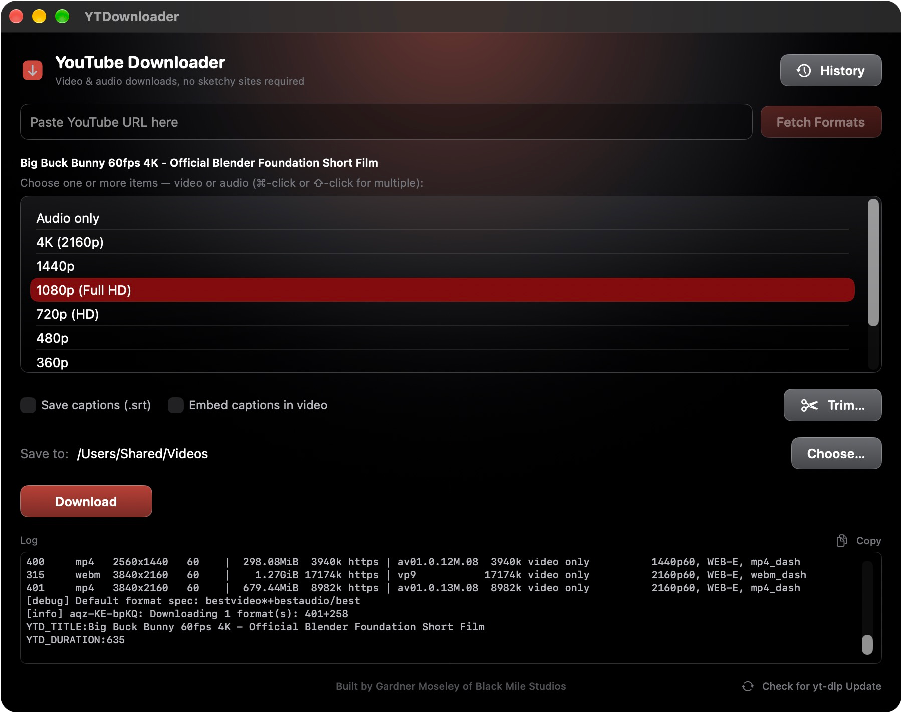
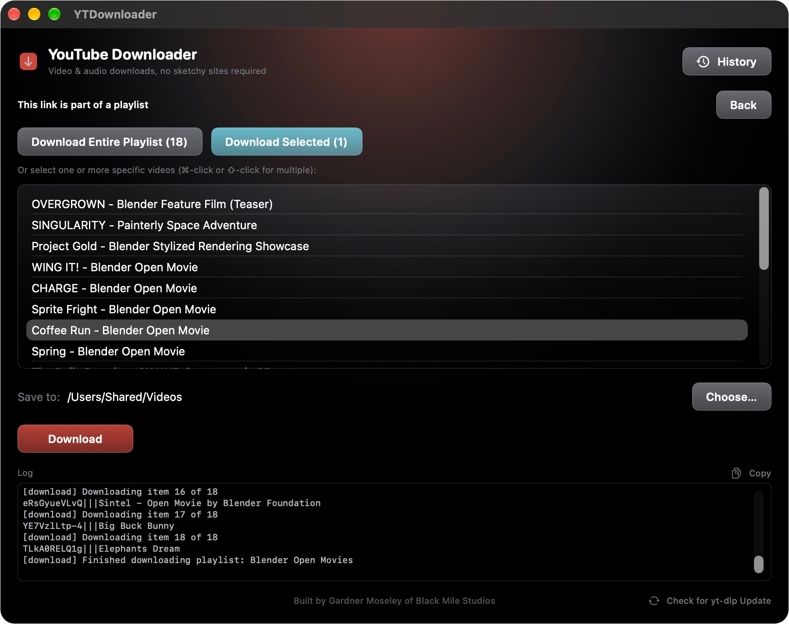
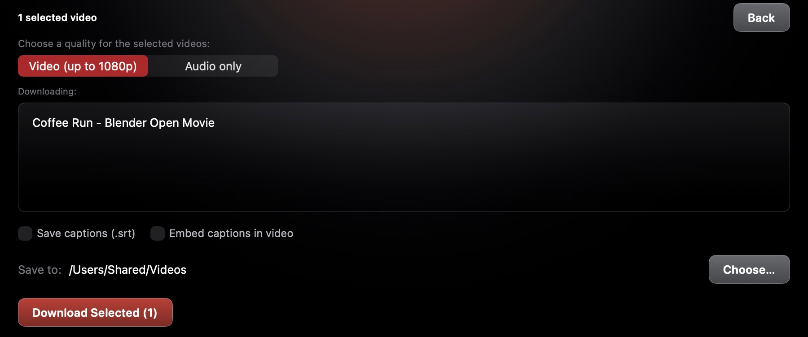
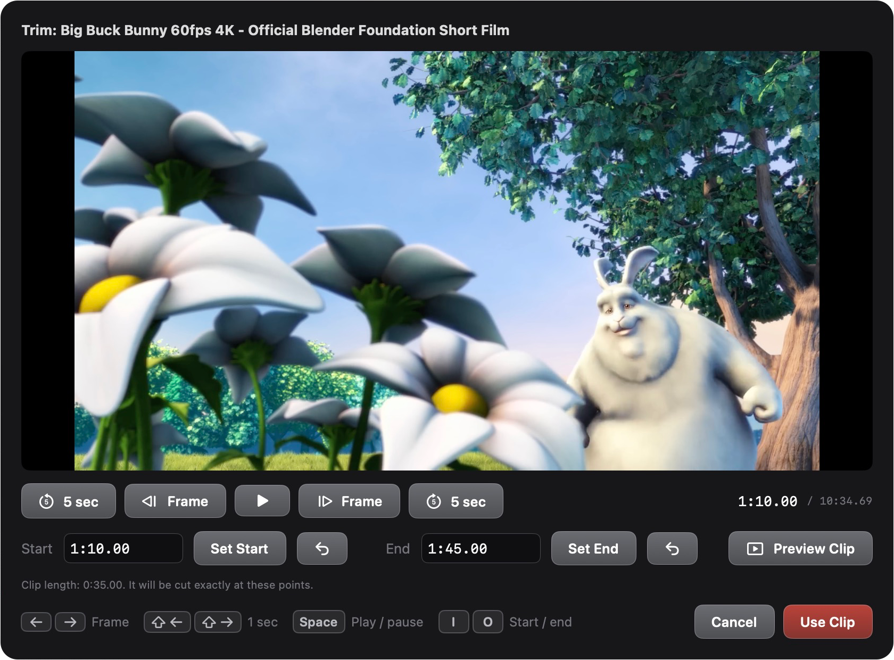
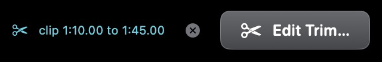
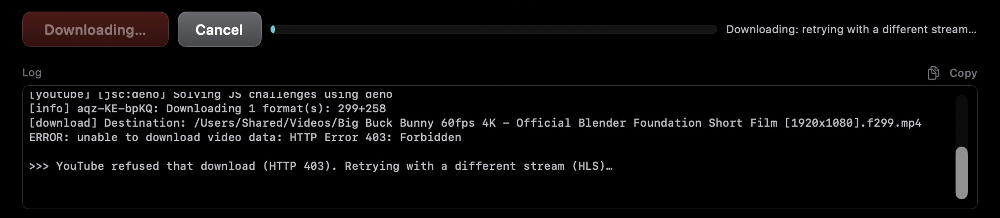
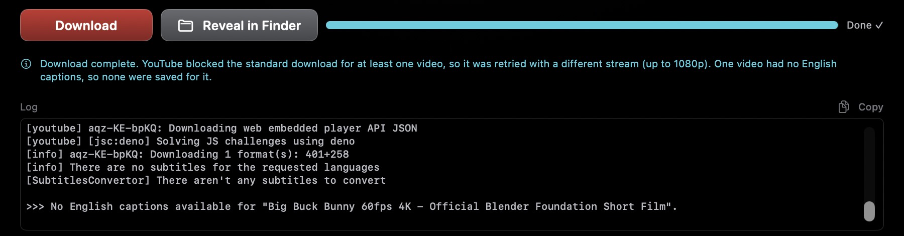
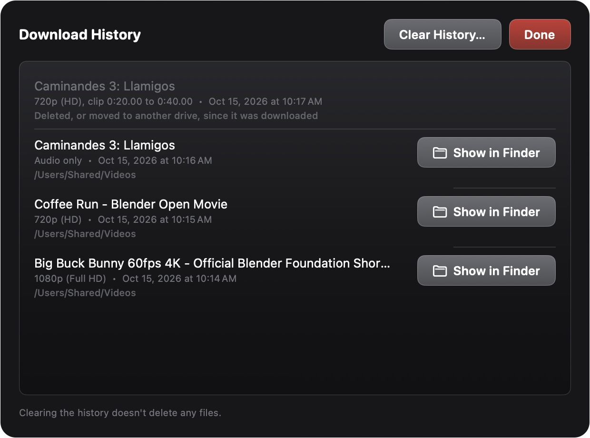
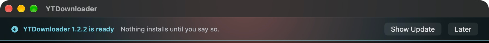
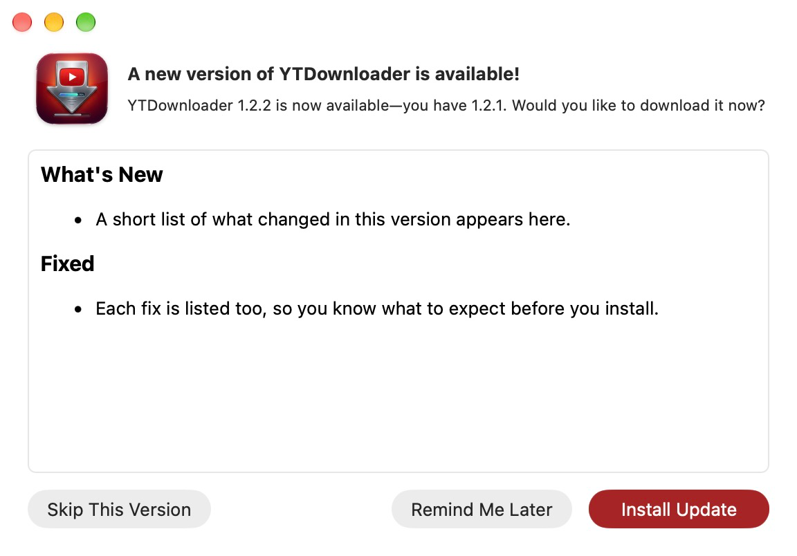

1. What YTDownloader does
YTDownloader saves YouTube videos to your Mac as ordinary files you can use in ProPresenter, Keynote, Premiere, QuickTime or anything else. Paste a link, pick a quality, click Download.
It can also:
- Save just the sound, as an audio file.
- Download a whole playlist, or just the videos you pick from it.
- Download just part of a video, cut exactly where you choose.
- Save a video's English captions as a separate file, or add them inside the video.
- Keep a list of your last 100 downloads so you can find them again.
Everything runs on your Mac. There are no ads, no accounts and no websites to visit, and the app keeps itself and its download engine up to date.
2. Getting started
What you need
- A Mac running macOS 15 or later.
- An internet connection.
The first time you open it
- Drag YTDownloader into your Applications folder and open it from there.
- macOS may say the app was downloaded from the internet and ask if you're sure. Click Open. The app is signed and checked by Apple; this question only comes up once.
- YTDownloader asks whether it may send notifications. Click Allow if you'd like to be told when a download finishes while you're in another app.
Your first download
- Copy a link from YouTube (in your browser's address bar, or with Share > Copy Link).
- Paste it into the box at the top of YTDownloader and click Fetch Formats.
- Click a quality in the list, such as 1080p (Full HD).
- Click Download.
The file goes to your Downloads folder unless you choose another. When it's done, click Reveal in Finder to see it.
3. The window at a glance

From top to bottom:
- History (top right): your recent downloads. See Download History.
- The link box and Fetch Formats: paste a YouTube link here, then click Fetch Formats to see what it's available in.
- The list: the video's title, then every quality you can download it in.
- Save captions and Embed captions in video: see Captions.
- Trim: download just part of the video. See Downloading part of a video.
- Save to and Choose: the folder your downloads go into.
- Download, with a progress bar beside it while it works.
- Log: the technical details of what's happening. You can ignore it unless something goes wrong. Copy copies the whole log, for sending to Gardner.
- Check for yt-dlp Update (bottom right): see Keeping up to date.
4. Choosing a quality
After Fetch Formats, the list shows each quality the video comes in, best first:
| Choice | Good for |
|---|---|
| Audio only | Music, sermons and podcasts when you don't need the picture. Saved as an .m4a file, which plays in Music, QuickTime, ProPresenter and most editors. |
| 4K (2160p) and 1440p | Very large screens, or editing where you'll zoom in. Big files, and slower to download. |
| 1080p (Full HD) | The best choice for most things, including projection and ProPresenter. |
| 720p (HD) | A smaller file that still looks good on most screens. |
| 480p and below | Small files when quality doesn't matter much. |
A few things worth knowing:
- You can pick more than one. Hold ⌘ (Command) and click to choose several, such as 1080p and Audio only. Each becomes its own file, and the button says how many, like Download (2).
- If you don't pick anything, Download saves the best quality YouTube offers.
- The list only shows what YouTube has. If there's no 4K choice, that video wasn't uploaded in 4K.
- Videos are always saved as .mp4 and audio as .m4a, which play everywhere.
- Sometimes YouTube won't hand over a high-quality stream. YTDownloader then retries at up to 1080p and tells you so. See While it downloads.
5. Playlists
If the link you paste is part of a playlist (YouTube links with list= in them), YTDownloader asks what you want to do.

- Download Entire Playlist saves every video, in a new folder named after the playlist. Each file is numbered in playlist order, like
07 - Coffee Run - Blender Open Movie [1920x804].mp4. - Download Selected saves just the videos you pick. The video from your link is already selected. Hold ⌘ and click to add more, or hold ⇧ (Shift) and click to select a run of them. These go straight into your Save to folder.
- Back leaves the playlist and returns to the empty window.
Either way, you then choose between Video (up to 1080p) and Audio only for all of them, and click Download.

Click Back on that screen to change which videos you picked. Playlist videos top out at 1080p, which keeps large playlists quick and reliable.
list= part.6. Downloading part of a video New in 1.2
Need just one song from a long service, or a minute from a talk? Trim saves only the part you choose.
- Paste the link and click Fetch Formats.
- Click Trim… (beside the captions boxes). A preview window opens and loads the video, which takes a few seconds.
- Find the start. Play and pause with the Space bar, jump with the 5 sec buttons, and step one frame at a time with the ← and → keys.
- Click Set Start (or press I).
- Find the end and click Set End (or press O).
- Click Preview Clip to watch just that part. If it's right, click Use Clip.
- Pick a quality and click Download.

You can also type times into the Start and End boxes, like 2:30, 1:02:03.50 or just seconds (95). The arrow button beside each box jumps the preview there. Under the times, the window shows how long the clip is, or what's wrong if the end is before the start.
Back in the main window, the clip times show beside the button, which now says Edit Trim. Click the × beside the times to go back to downloading the whole video.

- The clip is cut exactly on the frames you chose. Doing that takes some processing after the download, so a clip can take longer than its length suggests.
- The file name gets the times added, like
Coffee Run - Blender Open Movie [1920x804] [clip 1m10s to 1m45s].mp4, so a clip never replaces the full video. - Captions, if you've asked for them, are cut to match the clip.
- Trim works on single videos, not playlists.
7. Captions New in 1.2
Two boxes in the main window add a video's English captions to your download. YTDownloader remembers your choice for next time.
- Save captions (.srt) saves the captions as a separate .srt file beside the video, with the same name. ProPresenter, Premiere, Final Cut and most editing and presentation software can import it. This works with Audio only downloads too.
- Embed captions in video puts the captions inside the video file as a subtitle track. They're off until you turn them on in the player: in QuickTime, choose View > Subtitles. Audio only downloads are skipped.
If the video's creator wrote captions, those are used. Otherwise YTDownloader uses YouTube's automatic captions and tidies them up: YouTube's automatic lines overlap each other, which looks messy on screen, so each line is ended when the next begins.
If a video has no English captions at all, it still downloads, and a note afterwards says no captions were saved for it.
8. While it downloads
The progress bar and the text beside it show how far along the download is. Downloads with captions, or clips, have an extra step at the end, so the bar may pause near the end while that finishes.
- Cancel stops the download and removes the unfinished files.
- When it's done, the bar says Done and Reveal in Finder opens the folder.
- If you've switched to another app, a notification says the download finished. Click Show in Finder on it to go straight to the file.
When YouTube refuses the usual download
YouTube sometimes refuses to hand over a video the usual way, often partway through. The log shows HTTP Error 403: Forbidden. YTDownloader notices, deletes the partial files and tries again with a different kind of stream. You don't need to do anything.

That other stream goes up to 1080p, so a 4K or 1440p choice comes out at 1080p, and a 60 fps video at 30 fps. When this happens, a blue note under the Download button says so.

The same note lists anything else worth knowing, such as a video that had no captions.
9. Where files go and what they're called
- Downloads go into the folder shown beside Save to. Click Choose… to pick another. Each time YTDownloader opens, it starts on your Downloads folder again.
- Files are named after the video's title, followed by the size of the picture, like
Coffee Run - Blender Open Movie [1920x804].mp4. Audio files are named after the title, sometimes with the sound quality added, like[129k]. - Characters a Mac can't use in file names, like
:and/, are swapped for look-alikes, so a title like "Caminandes 3: Llamigos" may have a slightly different colon in its file name. - If a file with the same name is already there, the new one is saved as
Name (1).mp4instead of replacing it. - A whole playlist goes into a new folder named after the playlist.
10. Download History New in 1.2
Click History in the top right (or press ⌘Y) to see your last 100 downloads, newest first. Each entry shows the title, what you downloaded (quality, Audio only, or the clip times), when, and which folder it's in.

- Show in Finder opens the folder with the file selected.
- Right-click an entry to open the file, copy its YouTube link, or remove it from the list.
- If you move or rename a file in Finder, History still finds it.
- A file that's been deleted, moved to the Trash or moved to another drive shows in gray.
- Clear History… empties the list. It never deletes your files.
11. Signing in to YouTube
Now and then YouTube asks to make sure a real person is downloading. When that happens, a Log in to YouTube window opens inside YTDownloader:
- Sign in with a Google account, the same way you would on youtube.com.
- Click the Done button at the top of that window.
- Click Fetch Formats or Download again.
Your password goes straight to Google; YTDownloader never sees it. The app keeps the sign-in so you aren't asked again until Google asks for it. Any account works, and it doesn't have to be the church's.
12. Keeping up to date
Updates to YTDownloader New in 1.2.1
YTDownloader checks for a new version once a day. When there is one, a banner across the top of the window says it's ready. Nothing downloads or installs until you say so.

- Show Update opens the update window, with what's new in that version.
- Later hides the banner until the next time YTDownloader opens or checks again.

In the update window:
- Install Update downloads the new version, then restarts YTDownloader with it. It takes under a minute.
- Remind Me Later closes the window. You'll be told again in a day or so.
- Skip This Version stops reminders for this version. You'll still hear about the next one.
To check right now, choose YTDownloader > Check for Updates…. The update window opens straight away, and says so if you're up to date. To see what changed in each version, choose Help > Release Notes.
Updates to the download engine
The part of YTDownloader that talks to YouTube is a tool called yt-dlp. YouTube changes often, and yt-dlp is updated to keep up, separately from the app. YTDownloader updates it by itself once a day, quietly. If downloads suddenly start failing, click Check for yt-dlp Update at the bottom right to get the newest one now.
13. Keyboard shortcuts
Main window
| Keys | Does |
|---|---|
| ⌘V | Paste a link into the link box |
| ⌘Y | Open Download History |
| ⌘-click | Pick more than one quality, or more than one playlist video |
| ⇧-click | Pick a run of playlist videos |
Trim window
| Keys | Does |
|---|---|
| Space | Play or pause |
| ← → | Back or forward one frame |
| ⇧← ⇧→ | Back or forward one second |
| I O | Set the start or the end at the current spot |
| Esc | Close without changing the clip |
The frame and play keys don't work while you're typing in a time box. Click anywhere else in the window first.
14. What it doesn't do
- It doesn't download whole channels at once. Use a playlist, or paste videos one at a time.
- It can't download a live stream while it's still live. Wait until the stream has ended and YouTube has finished processing it (usually within a few hours).
- It can't download private videos, or members-only videos you don't have access to.
- It works with YouTube only, not other video sites.
- Captions are English only.
Only download videos you have the right to use: your church's own videos, videos the owner has given permission for, or ones under a license that allows reuse (YouTube shows "Creative Commons" under the video when it is).
15. When something goes wrong
- Read the red or blue message under the Download button. It usually says what happened.
- Click Check for yt-dlp Update at the bottom right, then try again. Most sudden failures are YouTube changes that a newer yt-dlp already handles.
- If a sign-in window opened, sign in, click Done and try again. See Signing in to YouTube.
- Try a lower quality, or try again a few minutes later. YouTube sometimes limits downloads for a while.
- Send feedback. Choose Help > Send Feedback…. It opens an email with your app version and the recent log already filled in, so you only need to say what you were trying to do.
The FAQ has answers to more specific problems.